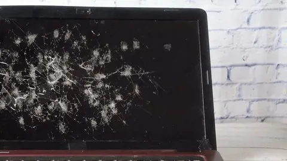
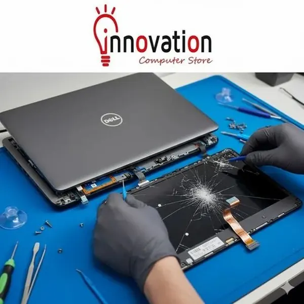

Laptops
Cracked Laptop Screen: Repair or Replace?
Find out when a cracked laptop screen can be repaired, what affects replacement cost and how to protect your data and device.
Introduction: Assess the Damage Before Deciding
A cracked screen can be frustrating. Depending on how bad the damage is to the laptop the damage can range from cracked glass, coloured lines, black spots, flickering or no display at all. The type of screen, amount of damage and value of the laptop will determine the outcome.
Avoid trying to press down on the cracked area. This can cause lacerations from the broken glass and will cause further damage to the layers within the screen. If it is still displaying then back up important files and get the laptop checked out. The technician will be able to tell you the exact type of panel it is to see if it is viable to replace.

Identify damage
Check if it is cracked, has black spots, coloured lines, flickering, dead pixels or only displays properly at certain angles. If it has a crack but still displays then it has had some physical damage and can get worse. Black spots or ink like spots will often mean it has had some damage.
If the laptop turns on but there is no display then plug in an external monitor (if available). This will give you some idea it is working and it is just the screen. It is not guaranteed but can help.

Prevent damage
If there is broken glass avoid touching the area. Avoid closing the laptop if there is potential for the glass to be shattered and causing damage to the keyboard/palm rest. Keep it away from children and animals. If you need to take it somewhere to get repaired then ensure you are careful when carrying it using a padded case. Avoid using any sticky tape on the active part of the screen unless told to by the technician.
If the case has warped, the battery looks swollen or the laptop is running very hot then avoid using it. Have it looked at by professionals. Don’t let the damage to the screen put you off looking at potential problems with the battery/chassis.
Warranty
Check the laptop warranty. Most manufacturers will exclude accidental damage such as impact, pressure and liquid. Check the exact terms. Check when you purchased the laptop, serial number and service details before getting it repaired by a third party.
If there is potential for it to be covered then contact the manufacturer or authorised repairers. Depending on the warranty, opening the laptop could effect your rights. Request a written quote for diagnosis.
Generally replacing the screen is a good option.
If the laptop is relatively new and in good condition then it would be best to replace the screen. Many laptops have a replaceable screen however it depends on the model. A technician will be able to tell you if it is a standard panel, touchscreen or display module.
If everything else (processor, ram, storage, battery and keyboard) are working how you want them to then it is best to replace the screen. If the laptop is essential to you then think about how long it will take to repair and if you will have a temporary device. Ask if it is an OEM, compatible or reconditioned part. Check what warranty comes with the repair.
Replacing the laptop may be a good option.
If the laptop is very old, has lots of other issues, minimal software support or the display assembly is going to be expensive then replacing may be a good option. Some high-end laptops have internal display components and can be expensive to repair. If the motherboard, hinges, case and screen have been damaged then it could be almost the price of a suitable laptop.
Request a full breakdown of how much it will cost to fully repair the laptop. Compare it to how much a new laptop would be. Think about moving your data across, licences, accessories and how much hassle it will be. The price of parts can be relatively cheap but labour can make a big difference.
What affects the cost of repairing the laptop screen?
The size, resolution, refresh rate, touch screen, panel and availability of the model will all affect the price. A standard panel with no touch may be cheaper than a high resolution touchscreen or display assembly with special hinge and camera. The labour charge will depend on who is doing the repair and how the laptop is designed.
Ask for a breakdown of the cost of the panel, labour, tax and any additional parts. Ensure the brightness, resolution, colours and refresh rate are the same as the original screen. If it is cheaper then it may still work however there will be a noticeable difference. Ask for a warranty on the part and labour.
External monito
If the laptop is working then you can connect an external monitor. Connect using HDMI/DisplayPort/USB-C or dock. Ensure that you connect to the correct input. You may need to use the shortcut to change between screens or go into your OS display settings.
This is just a temporary solution. Avoid taking the laptop around with loose glass and don’t use it if there is a safety risk. Back up your important data.
Questions for technician
Is it just the panel or could it be the case, hinges, camera, display cable or motherboard? Ask for the exact part number that needs replacing. Is it a new, reconditioned or compatible part? How long will it take to repair? Will they have access to your files/storage?
If possible back up your data. Log out of any sensitive accounts. Follow their guidelines on handling your data. Ask for a written quote and warranty. Having an explanation will help you to be objective when deciding if it is better to repair or replace.
Conclusion
A cracked laptop screen does not necessarily mean you need to replace the laptop. If it is reliable and the display assembly can be obtained at a reasonable price then you will get more use out of it by replacing the screen. However if it is old and has many expensive issues then replacing it may be more cost effective. Ensure you are protected from any broken glass, back up your important files and request a written diagnosis.
Need a hand with your printer or laptop?
Printerworld sells printers, laptops and genuine supplies, and repairs and services both. Bring in your model number and we will help you get it right.